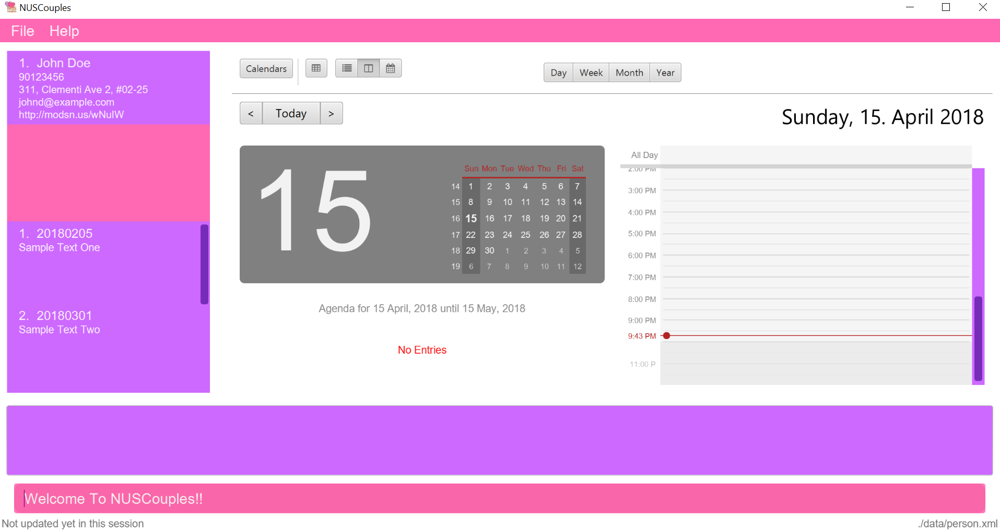

By: Team T09-B4 Since: Feb 2018 Licence: MIT
Welcome to the User Guide for NUSCouples!
NUSCouples is a desktop app specially made for you, couples from National University of Singapore (NUS), to create and remember memories with ease amid our hectic school term. Imagine what it would be like to be able identify common breaks, schedule meetings and view important dates with your partner, and record your thoughts or feelings, all in the same application mere keystrokes away. Best of all, everything can be controlled from the handy Command Line Interface (CLI). Experience the clarity that comes with a Graphical User Interface (GUI), with none of the pain of searching for and remembering where each button is. Interested yet? Jump to Section 1, “Quick Start” to get started. Enjoy!
1. Quick Start
-
Ensure you have Java version
1.8.0_60or later installed in your Computer.Having any Java 8 version is not enough.
This app will not work with earlier versions of Java 8. -
Download the latest
NUSCouples.jarhere. -
Copy the file to the folder you want to use as the home folder for NUSCouples.
-
Double-click the file to start the app. The app window should appear in a few seconds.
 -
Type the command in the command box and press Enter to execute it.
e.g. typinghelpand pressing Enter will open the help window. -
Some example commands you can try:
-
addn/John Doe p/98765432 e/johnd@example.com a/John street, block 123, #01-01: adds a partner namedJohn Doeto NUSCouples. -
exit: exits the app
-
-
Refer to Section 2, “Features” for details of each command.
return to Table of Contents
2. Features
Command Format
-
Some commands have an alias, which you can also use to execute the command e.g. to add your partner to NUSCouples, you can type either
add n/John Doeora n/John Doe. -
Words in
UPPER_CASEare the parameters to be supplied by the user e.g. inadd n/NAME,NAMEis a parameter which can be used asadd n/John Doe. -
Items in square brackets are optional e.g
n/NAME [t/TAG]can be used asn/John Doe t/friendor asn/John Doe. -
Items with
… after them can be used multiple times including zero times e.g.[t/TAG]…can be used ast/friend,t/friend t/familyetc. -
Parameters can be in any order e.g. if the command specifies
n/NAME p/PHONE_NUMBER,p/PHONE_NUMBER n/NAMEis also acceptable.
2.1. General Features
2.1.1. Viewing help : help
Format: help
Alias: hlp
2.1.2. Adding your partner: add
Adds your partner to NUSCouples.
Format: add n/NAME p/PHONE_NUMBER e/EMAIL a/ADDRESS tt/TIMETABLE_URL [t/TAG]…
Alias: a n/NAME p/PHONE_NUMBER e/EMAIL a/ADDRESS tt/TIMETABLE_URL [t/TAG]…
Examples:
-
add n/John Doe p/98765432 e/johnd@example.com a/John street, block 123, #01-01 tt/http://modsn.us/IO4n5 -
add n/Betsy Crowe t/friend e/betsycrowe@example.com a/Newgate Prison p/1234567 tt/http://modsn.us/wNuIW t/criminal
2.1.3. Editing your partner : edit
Edits your existing partner in NUSCouples.
Format: edit [n/NAME] [p/PHONE] [e/EMAIL] [a/ADDRESS] [tt/TIMETABLE_URL] [t/TAG]…
Alias: ed [n/NAME] [p/PHONE] [e/EMAIL] [a/ADDRESS] [tt/TIMETABLE_URL] [t/TAG]…
Examples:
-
edit p/91234567 e/johndoe@example.com
Edits the phone number and email address of your partner to be91234567andjohndoe@example.comrespectively. -
edit n/Betsy Crower t/
Edits the name of your partner to beBetsy Crowerand clears all existing tags.
2.1.4. Deleting your partner : delete
Deletes your partner from NUSCouples.
Format: delete
Alias: d
2.1.5. Listing entered commands : history
Lists all the commands that you have entered in reverse chronological order.
Format: history
Alias: hist
|
Pressing the ↑ and ↓ arrows will display the previous and next input respectively in the command box. |
2.1.6. Undoing previous command : undo
Restores NUSCouples to the state before the previous "undoable command" was executed.
Format: undo
Alias: u
|
Undoable commands: those commands that modify NUSCouples content ( |
Examples:
-
delete
undo(reverses thedeletecommand) -
select
help
undo
Theundocommand fails as there are no undoable commands executed previously. -
edit n/John Doe
delete
undo(reverses thedeletecommand)
undo(reverses theedit n/John Doecommand)
2.1.7. Redoing the previously undone command : redo
Reverses the most recent undo command.
Format: redo
Alias: r
Examples:
-
delete
undo(reverses thedeletecommand)
redo(reapplies thedeletecommand) -
delete
redo
Theredocommand fails as there are noundocommands executed previously. -
edit n/John Doe
delete
undo(reverses thedeletecommand)
undo(reverses theedit n/John Doecommand)
redo(reapplies theedit n/John Doecommand)
redo(reapplies thedeletecommand)
2.1.8. Saving the data
NUSCouples data are saved in the hard disk automatically after any command that changes the data.
There is no need to save manually.
2.1.9. Exiting the program : exit
Exits the program.
Format: exit
Alias: ex
Return to Table of Contents
2.2. Timetable
2.2.2. Viewing your partner’s timetable : tview
Shows the current saved timetable of your partner.
Format: tview
Alias: tv
2.2.3. Comparing timetable : tcompare
Displays the common breaks shared by the given timetable and your partner’s timetable in a timetable format.
Format: tcompare tt/TIMETABLE_URL
Alias: tc tt/TIMETABLE_URL
Examples:
-
tcompare tt/http://modsn.us/IO4n5 -
tc tt/http://modsn.us/wNuIW
Return to Table of Contents
2.3. Calendar
2.3.1. Viewing current calendar : cview
View Google calendar.
Format: cview
Alias: cv
2.3.2. Adding new event to Google calendar : cadd
Adds new event to Google calendar.
Format: cadd
Alias: ca
2.3.3. Deleting event from Google calendar: cdelete
Delete specified event from Google calendar.
Format: cdelete
Alias: cd
2.3.4. Editing event on Google calendar : cedit
Edit event on Google calendar.
Format: cedit
Alias: ce
Return to Table of Contents
2.4. Journal
2.4.1. Viewing all journal entries : jview
View all journal entries.
Format: jview
Alias: jv
2.4.2. Creating a new journal entry : jnew
Creates a new window that allows the user to input and save journal entries. The journal entry is identified by
the date it was created in the format yyyymmdd. If an entry with that date already exists, it will open
that entry in the new window. Saving not required as the journal entry will be automatically saved when the
journal window is closed.
Format: jnew
Alias: jn
2.4.3. Deleting a journal entry : jdelete
Deletes a journal entry in the specified index.
Format: jdelete
Alias: jd
Return to Table of Contents
2.5. Location
2.5.1. Finding building location : location
Shows the location (by building) of the entered classroom name.
Format: location
Alias: loc
Return to Table of Contents
2.6. Coming in v2.0
2.6.1. Encrypting data files [coming in v2.0]
{explain how the user can enable/disable data encryption}
2.6.2. Archiving journal entries [coming in v2.0]
{explain how the user can export old journal entries to another storage location in their computer}
2.6.3. Send Google Maps location to phone [coming in v2.0]
{explain how the user can use their phones to navigate to a location in NUS by sending the location to the user’s phone from the Google Maps API}
2.6.4. Filtering journal entries by date [coming in v2.0]
Filters journal entries by the specified interval.
Format: jfilter
Alias: jf
Return to Table of Contents
3. FAQ
Q: How do I transfer my data to another Computer?
A: Install the app in the other computer and overwrite the empty data file it creates with the file that contains the data of your previous NUSCouples folder.
Return to Table of Contents
4. Command Summary
| Command | Description | Format | Example |
|---|---|---|---|
add, a |
Add your partner |
|
|
edit, ed |
Edit your partner |
|
|
delete, d |
Delete your partner |
|
|
select, s |
Select your partner |
|
|
history, hist |
View command history |
|
|
undo, u |
Undo the previous undoable command |
|
|
redo, r |
Reverses the most recent undo command |
|
|
tview, tv |
View your partner’s timetable |
|
|
jview, jv |
View your journal |
|
|
jnew, jn |
Create a new journal entry |
|
|
jdelete, jd |
Delete a journal entry |
|
|
cview, cv |
Viewing your current calendar |
|
|
cadd, ca |
Adding a new event to your current calendar |
|
|
cdelete, cd |
Deleting an event from your current calendar |
|
|
cedit, ce |
Editing an event from your current calendar |
|
|
location, loc |
Finding building location |
|
|
exit, ex |
Exits NUSCouples |
|
Return to Table of Contents